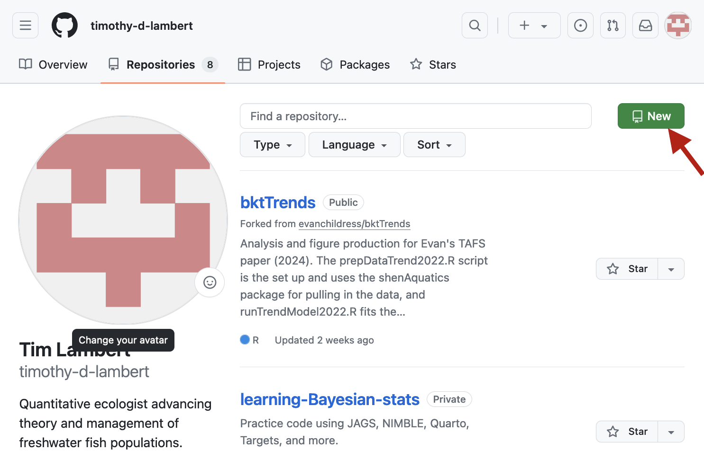
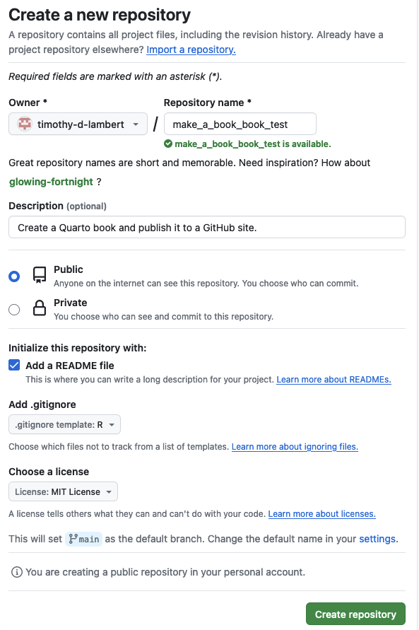
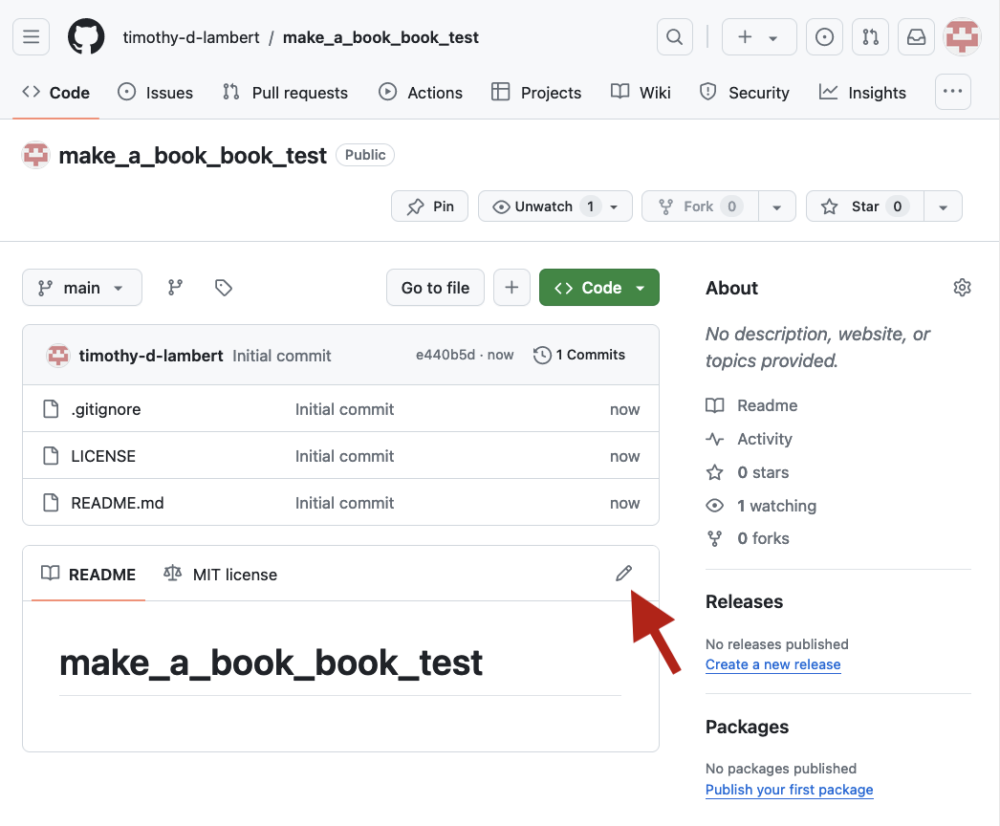
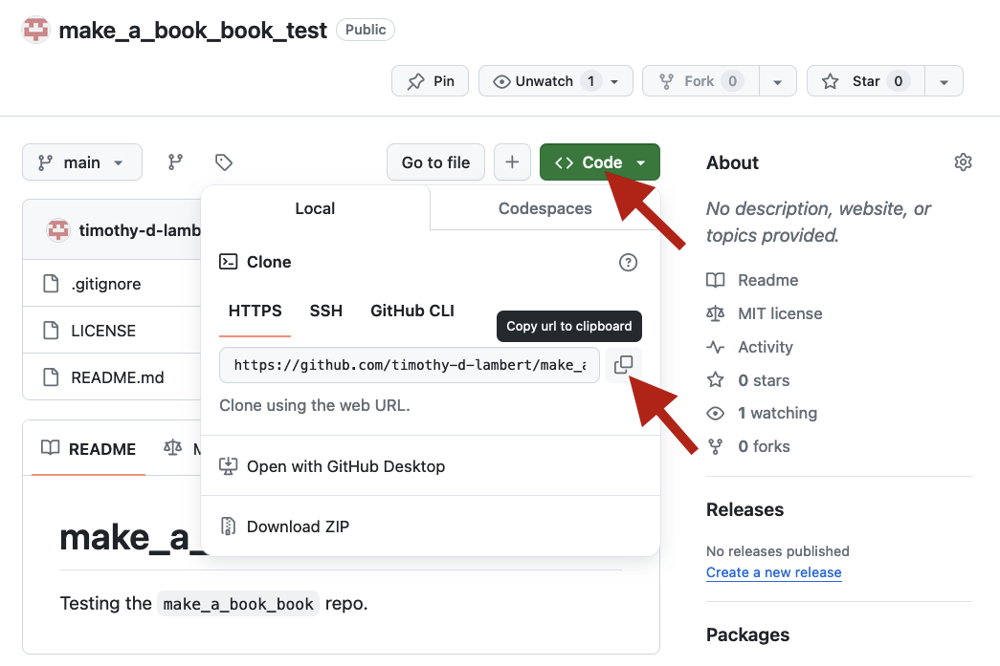
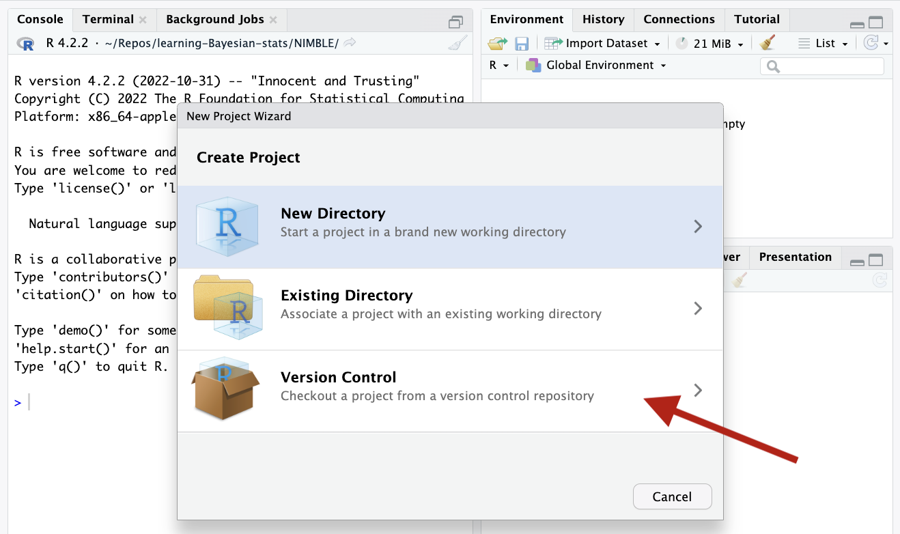
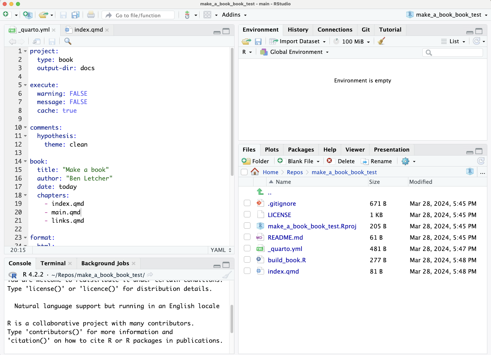
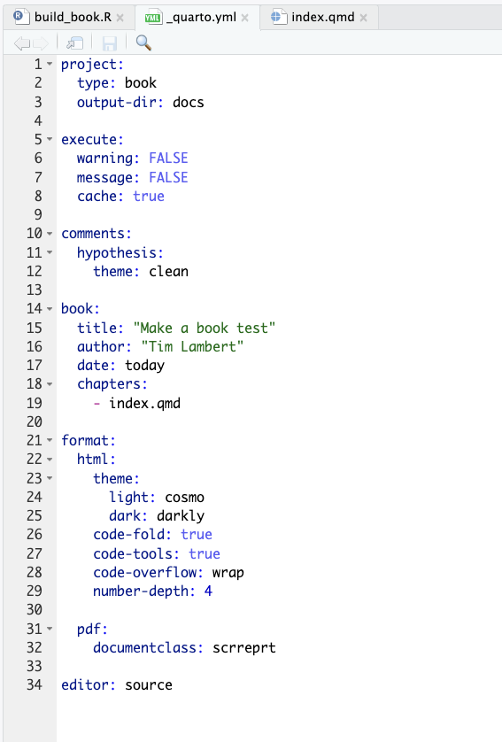
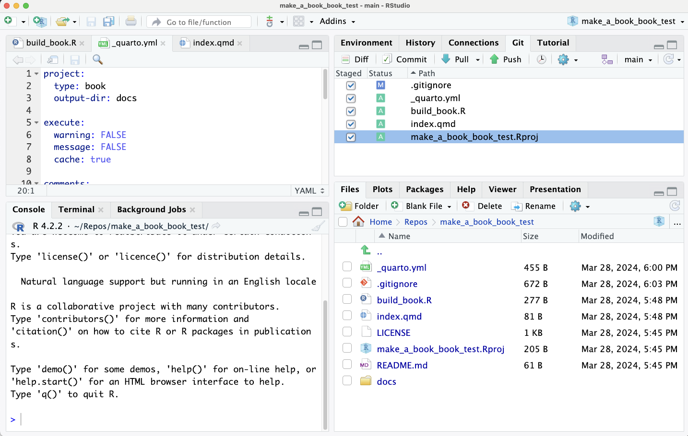
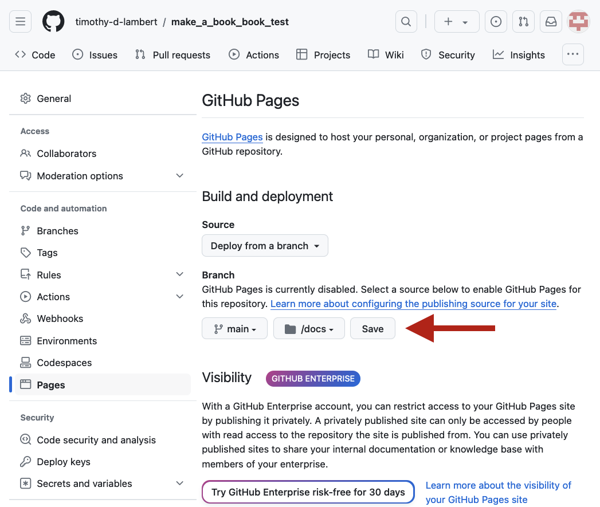
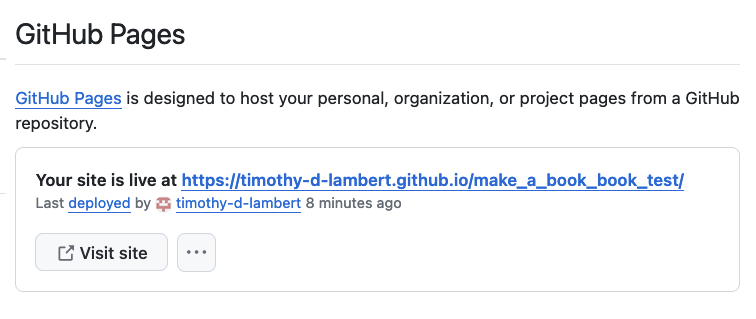

2 Steps
2.1 Get started
2.1.1 GitHub account
If you don’t have a GitHub account, create one at github.com.
2.1.2 Download
2.2 Set up the book
2.2.1 GitHub
2.2.1.1 Create GitHub repo
Go to your GitHub site and create a new repository (repo) for the book from the Repositories tab.

Use a meaningful name for the book. This repo name will also be the name of your RStudio project (see below) and the default name for the github.io link (e.g. https://bletcher.github.io/make_a_book_book/).
Set up your repo using the settings as in the image below (but using your own repo name):

Hit Create repository to create the new repo.
2.2.1.2 Edit readme file
Edit the readme file by hitting the pencil icon as shown below:

Add a short description about the repo (book). Hit Commit changes when done and return to the main repo page.
2.2.1.3 Copy repo link
Copy the repo link by hitting the green Code button and hitting the copy icon (lower red arrow). We will use this link to set up the project in RStudio.

2.2.2 RStudio
2.2.2.1 Create project
Now in RStudio, create a new project based on your new repo. In the upper right corner, click on New project and click Version control.

Click Git and paste the copied repo link into Repository URL. This will automatically use your repo name as the project directory and the project name. Make sure to pick a subdirectory that makes sense for your file organization — I use a projects subdirectory for all my projects.
Hit Create project to create the new project and the few files from your repo will be copied from GitHub into the project directory.
2.2.2.2 Copy base Quarto files
To help start our book, we want to copy three files from the make_a_book_book repo. The files are _quarto.yml, index.qmd and build_book.R.
From the make_a_book_book repo’s GitHub page, you can get the files in any of the following ways: (1) Hit the green Code button and download ZIP file, then extract the files and add them to your project folder; (2) Download the files individually and add them to your project folder; or (3) Create three new R files in RStudio, open each file in the repo and copy and paste the text into the files in RStudio. (Since there are only three files to add, I would just copy and paste, but you will need to deal with spacing issues in the _quarto.yml file — see below.)
When you finish, RStudio should look like this:

The _quarto.yml file specifies Quarto options and sets up the structure of the book. The index.qmd file is the landing page for our (soon-to-be) github.io web page. The build_book.R file contains code for building the whole book or one chapter at a time (which will be useful as your book grows).
Check that your filenames exactly match the names specified above. If they don’t, rename the files to the correct names. When you rename the files, make sure you don’t have an appended *.R on the filename (e.g. _quarto.yml.R).
In the book: section of the _quarto.yml file, change the title and author to fit your project. Also, under the chapters: subheading, delete out the main.qmd and links.qmd rows. These are chapters from the make_a_book_book project that you are reading that you will not use. As you add chapters (.qmd files) to your project, you will add the Quarto file names here.
Be very careful of spacing in the .yml file - check the Quarto documentation for .yml file details. Make sure the spacing looks like this:

You can avoid spacing issues by directly downloading the R files instead of copying/pasting (which changes the spacing, agrhh.).
2.2.2.3 Update .gitignore
We need to update the default .gitignore file that was created when we made the repo so that it does not ignore files in the \doc subdirectory. This subdirectory is where the files for the web page will live.
Open the .gitignore file and comment out the docs/ line in the # pkgdown section so that it looks like this: #docs/.
Save the file and close it. You should be able to pretty much ignore the .gitignore file from now on.
2.2.2.4 Create docs folder
In the Files section of RStudio, create a new subdirectory called docs. This will hold the documents for the github.io page.
2.2.2.5 First commit
Since we have made some changes to our files, now is a good time to do our first commit to GitHub. This will copy the selected files to GitHub and create the next version of the repo. Hit the Git tab and select all the files so that your project looks something like this:

Hit Commit and add a meaningful message to the Commit message text box. Now, hit the Commit button and you should see a list of files that have changed. This has created a new version of all your commited files on your local computer. To send this commit to GitHub, hit the Close button and hit Push in the upper right hand corner of the RStudio: Review Changes box. Now hit the Close button on the Git Push box and close the RStudio: Review Changes. Repeat the commit/push procedure each time you have made significant changes to your project and you want to create a new version. The github.io web site will reflect the most recent version of your project in GitHub.
2.2.3 github.io
Let’s set up the github.io page so that anyone can see the contents of your project on the github.io web page.
Go back to your GitHub page, open the Settings tab, and click on Pages. Select Deploy from a branch in the Source section and select the /docs option in the Select folder dropdown. Hit Save as shown below:

2.2.4 RStudio 2
2.2.4.1 Render the book
Open the build_book.R file, load the libraries and run quarto::quarto_render(output_format = "html"). This will build the book and place the files for the github.io site in the /docs folder.
Now you should have files in the /docs folder. Redo the commit/Push sequence and we are ready to see the first version of our book on github.io.
2.2.5 github.io 2
Return to your GitHub page and hit the Actions tab. If all went well, you should see a green check icon followed by “pages build and deployment”. If there is a green check and not a red x, we have created a web page! Each time you push your project to GitHub, your pages (book) will automatically be updated. For larger projects, it may take a while to update your page and you can watch the progress on the Actions tab.
Now go back to the Settings tab and go to the Pages page and you should now see a “Your site is live at…” and a link to visit the site. This is your site.

Now that you have a working page, it’s a good idea to paste the link into your readme file. You can do that either in GitHub by editing the readme directly or by editing the file in RStudio. If you edit within GitHub, make sure to Pull the project in the RStudio to update the project.